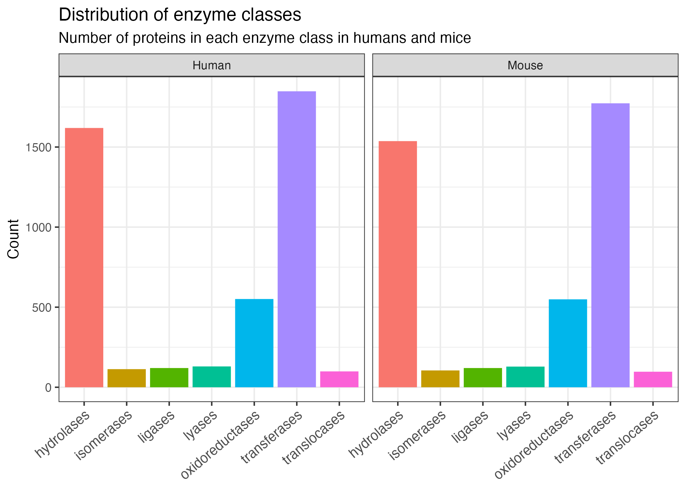

| Entry | Gene Names | Organism | Function [CC] | Protein names | Gene Ontology (molecular function) | Subcellular location [CC] | Reviewed | Entry Name | Pathway | Cofactor | pH dependence | Temperature dependence | EC number | Protein families | Intramembrane | Transmembrane | Catalytic activity |
|---|---|---|---|---|---|---|---|---|---|---|---|---|---|---|---|---|---|
| Q64249 | Nr6a1 Gcnf | Mus musculus (Mouse) | FUNCTION: Orphan nuclear receptor. Binds to a response element containing the sequence 5’-TCAAGGTCA-3’. May be involved in the regulation of gene expression in germ cell development during gametogenesis. {ECO:0000269|PubMed:7854358}. | Nuclear receptor subfamily 6 group A member 1 (Germ cell nuclear factor) (GCNF) (mGCNF) (Retinoid receptor-related testis-specific receptor) (RTR) | DNA-binding transcription activator activity, RNA polymerase II-specific [GO:0001228]; estrogen response element binding [GO:0034056]; nuclear receptor activity [GO:0004879]; protein homodimerization activity [GO:0042803]; RNA polymerase II cis-regulatory region sequence-specific DNA binding [GO:0000978]; sequence-specific DNA binding [GO:0043565]; sequence-specific double-stranded DNA binding [GO:1990837]; zinc ion binding [GO:0008270] | SUBCELLULAR LOCATION: Nucleus {ECO:0000305}. | reviewed | NR6A1_MOUSE | NA | NA | NA | NA | NA | Nuclear hormone receptor family, NR6 subfamily | NA | NA | NA |
| P18406 | Ccn1 Cyr61 Igfbp10 | Mus musculus (Mouse) | FUNCTION: Promotes cell proliferation, chemotaxis, angiogenesis and cell adhesion. Appears to play a role in wound healing by up-regulating, in skin fibroblasts, the expression of a number of genes involved in angiogenesis, inflammation and matrix remodeling including VEGA-A, VEGA-C, MMP1, MMP3, TIMP1, uPA, PAI-1 and integrins alpha-3 and alpha-5 (By similarity). CCN1-mediated gene regulation is dependent on heparin-binding (By similarity). Down-regulates the expression of alpha-1 and alpha-2 subunits of collagen type-1 (By similarity). Promotes cell adhesion and adhesive signaling through integrin alpha-6/beta-1, cell migration through integrin alpha-1/beta-5 and cell proliferation through integrin alpha-v/beta-3 (By similarity). {ECO:0000250}. | CCN family member 1 (3CH61) (Cellular communication network factor 1) (Cysteine-rich angiogenic inducer 61) (Insulin-like growth factor-binding protein 10) (IBP-10) (IGF-binding protein 10) (IGFBP-10) (Protein CYR61) | extracellular matrix binding [GO:0050840]; growth factor binding [GO:0019838]; heparin binding [GO:0008201]; integrin binding [GO:0005178] | SUBCELLULAR LOCATION: Secreted. | reviewed | CCN1_MOUSE | NA | NA | NA | NA | NA | CCN family | NA | NA | NA |
| Q3UH68 | Limch1 Kiaa1102 | Mus musculus (Mouse) | FUNCTION: Actin stress fibers-associated protein that activates non-muscle myosin IIa. Activates the non-muscle myosin IIa complex by promoting the phosphorylation of its regulatory subunit MRLC/MYL9. Through the activation of non-muscle myosin IIa, positively regulates actin stress fibers assembly and stabilizes focal adhesions. It therefore negatively regulates cell spreading and cell migration. {ECO:0000250|UniProtKB:Q9UPQ0}. | LIM and calponin homology domains-containing protein 1 | actin binding [GO:0003779]; metal ion binding [GO:0046872]; myosin II head/neck binding [GO:0032034] | SUBCELLULAR LOCATION: Cytoplasm, cytoskeleton, stress fiber {ECO:0000250|UniProtKB:Q9UPQ0}. | reviewed | LIMC1_MOUSE | NA | NA | NA | NA | NA | LIMCH1 family | NA | NA | NA |
| Q9HBX8 | LGR6 UNQ6427/PRO21331 VTS20631 | Homo sapiens (Human) | FUNCTION: Receptor for R-spondins that potentiates the canonical Wnt signaling pathway and acts as a marker of multipotent stem cells in the epidermis. Upon binding to R-spondins (RSPO1, RSPO2, RSPO3 or RSPO4), associates with phosphorylated LRP6 and frizzled receptors that are activated by extracellular Wnt receptors, triggering the canonical Wnt signaling pathway to increase expression of target genes. In contrast to classical G-protein coupled receptors, does not activate heterotrimeric G-proteins to transduce the signal. May act as a tumor suppressor. {ECO:0000269|PubMed:21727895, ECO:0000269|PubMed:22615920}. | Leucine-rich repeat-containing G-protein coupled receptor 6 | heparin binding [GO:0008201]; protein-hormone receptor activity [GO:0016500]; Roundabout binding [GO:0048495]; transmembrane signaling receptor activity [GO:0004888] | SUBCELLULAR LOCATION: Cell membrane {ECO:0000269|PubMed:22615920}; Multi-pass membrane protein {ECO:0000269|PubMed:22615920}. | reviewed | LGR6_HUMAN | NA | NA | NA | NA | NA | G-protein coupled receptor 1 family | NA | TRANSMEM 568..588; /note=“Helical; Name=1”; /evidence=“ECO:0000255”; TRANSMEM 599..619; /note=“Helical; Name=2”; /evidence=“ECO:0000255”; TRANSMEM 645..665; /note=“Helical; Name=3”; /evidence=“ECO:0000255”; TRANSMEM 688..708; /note=“Helical; Name=4”; /evidence=“ECO:0000255”; TRANSMEM 728..748; /note=“Helical; Name=5”; /evidence=“ECO:0000255”; TRANSMEM 775..795; /note=“Helical; Name=6”; /evidence=“ECO:0000255”; TRANSMEM 810..830; /note=“Helical; Name=7”; /evidence=“ECO:0000255” | NA |
| Q64705 | Usf2 | Mus musculus (Mouse) | FUNCTION: Transcription factor that binds to a symmetrical DNA sequence (E-boxes) (5’-CACGTG-3’) that is found in a variety of viral and cellular promoters. | Upstream stimulatory factor 2 (Major late transcription factor 2) (Upstream transcription factor 2) | bHLH transcription factor binding [GO:0043425]; DNA binding [GO:0003677]; DNA-binding transcription factor activity [GO:0003700]; DNA-binding transcription factor activity, RNA polymerase II-specific [GO:0000981]; double-stranded DNA binding [GO:0003690]; identical protein binding [GO:0042802]; protein heterodimerization activity [GO:0046982]; protein homodimerization activity [GO:0042803]; protein-containing complex binding [GO:0044877]; RNA polymerase II cis-regulatory region sequence-specific DNA binding [GO:0000978]; sequence-specific DNA binding [GO:0043565]; sequence-specific double-stranded DNA binding [GO:1990837] | SUBCELLULAR LOCATION: Nucleus. | reviewed | USF2_MOUSE | NA | NA | NA | NA | NA | NA | NA | NA | NA |
| Q49AS3 | LRRC37A5P C9orf29 | Homo sapiens (Human) | NA | Putative protein LRRC37A5P (Leucine-rich repeat-containing 37 member A5 pseudogene) | NA | NA | reviewed | L37A5_HUMAN | NA | NA | NA | NA | NA | NA | NA | NA | NA |
| Q04887 | Sox9 Sox-9 | Mus musculus (Mouse) | FUNCTION: Transcription factor that plays a key role in chondrocytes differentiation and skeletal development (PubMed:10319868, PubMed:11371614, PubMed:12414734, PubMed:15132997, PubMed:18415932, PubMed:20940257, PubMed:28263186). Specifically binds the 5’-ACAAAG-3’ DNA motif present in enhancers and super-enhancers and promotes expression of genes important for chondrogenesis, including cartilage matrix protein-coding genes COL2A1, COL4A2, COL9A1, COL11A2 and ACAN, SOX5 and SOX6 (PubMed:9119111, PubMed:10805756, PubMed:12414734, PubMed:15694126, PubMed:17525254, PubMed:26146088, PubMed:26150426, PubMed:26910618, PubMed:28263186). Also binds to some promoter regions (PubMed:20940257). Plays a central role in successive steps of chondrocyte differentiation (PubMed:11371614, PubMed:12414734, PubMed:22421045). Absolutely required for precartilaginous condensation, the first step in chondrogenesis during which skeletal progenitors differentiate into prechondrocytes (PubMed:11371614, PubMed:12414734). Together with SOX5 and SOX6, required for overt chondrogenesis when condensed prechondrocytes differentiate into early stage chondrocytes, the second step in chondrogenesis (PubMed:11371614, PubMed:12414734, PubMed:15529345). Later, required to direct hypertrophic maturation and block osteoblast differentiation of growth plate chondrocytes: maintains chondrocyte columnar proliferation, delays prehypertrophy and then prevents osteoblastic differentiation of chondrocytes by lowering beta-catenin (CTNNB1) signaling and RUNX2 expression (PubMed:22421045, PubMed:31121357). Also required for chondrocyte hypertrophy, both indirectly, by keeping the lineage fate of chondrocytes, and directly, by remaining present in upper hypertrophic cells and transactivating COL10A1 along with MEF2C (PubMed:21367821, PubMed:22421045). Low lipid levels are the main nutritional determinant for chondrogenic commitment of skeletal progenitor cells: when lipids levels are low, FOXO (FOXO1 and FOXO3) transcription factors promote expression of SOX9, which induces chondrogenic commitment and suppresses fatty acid oxidation (PubMed:32103177). Mechanistically, helps, but is not required, to remove epigenetic signatures of transcriptional repression and deposit active promoter and enhancer marks at chondrocyte-specific genes (PubMed:30021842). Acts in cooperation with the Hedgehog pathway-dependent GLI (GLI1 and GLI3) transcription factors (PubMed:29659575). In addition to cartilage development, also acts as a regulator of proliferation and differentiation in epithelial stem/progenitor cells: involved in the lung epithelium during branching morphogenesis, by balancing proliferation and differentiation and regulating the extracellular matrix (PubMed:24191021). Controls epithelial branching during kidney development (PubMed:21212101). {ECO:0000269|PubMed:10319868, ECO:0000269|PubMed:10805756, ECO:0000269|PubMed:11371614, ECO:0000269|PubMed:12414734, ECO:0000269|PubMed:15132997, ECO:0000269|PubMed:15529345, ECO:0000269|PubMed:15694126, ECO:0000269|PubMed:17525254, ECO:0000269|PubMed:18415932, ECO:0000269|PubMed:20940257, ECO:0000269|PubMed:21212101, ECO:0000269|PubMed:21367821, ECO:0000269|PubMed:22421045, ECO:0000269|PubMed:24191021, ECO:0000269|PubMed:26146088, ECO:0000269|PubMed:26150426, ECO:0000269|PubMed:26910618, ECO:0000269|PubMed:28263186, ECO:0000269|PubMed:29659575, ECO:0000269|PubMed:30021842, ECO:0000269|PubMed:31121357, ECO:0000269|PubMed:32103177, ECO:0000269|PubMed:9119111}. | Transcription factor SOX-9 (mSox9) | beta-catenin binding [GO:0008013]; bHLH transcription factor binding [GO:0043425]; chromatin binding [GO:0003682]; cis-regulatory region sequence-specific DNA binding [GO:0000987]; DNA binding [GO:0003677]; DNA-binding transcription activator activity, RNA polymerase II-specific [GO:0001228]; DNA-binding transcription factor activity [GO:0003700]; DNA-binding transcription factor activity, RNA polymerase II-specific [GO:0000981]; pre-mRNA intronic binding [GO:0097157]; protein kinase A catalytic subunit binding [GO:0034236]; RNA polymerase II cis-regulatory region sequence-specific DNA binding [GO:0000978]; sequence-specific DNA binding [GO:0043565]; sequence-specific double-stranded DNA binding [GO:1990837]; transcription cis-regulatory region binding [GO:0000976] | SUBCELLULAR LOCATION: Nucleus {ECO:0000255|PROSITE-ProRule:PRU00267, ECO:0000269|PubMed:10805756, ECO:0000269|PubMed:15694126, ECO:0000269|PubMed:20940257, ECO:0000269|PubMed:21212101, ECO:0000269|PubMed:26910618}. | reviewed | SOX9_MOUSE | NA | NA | NA | NA | NA | NA | NA | NA | NA |
| Q9H165 | BCL11A CTIP1 EVI9 KIAA1809 ZNF856 | Homo sapiens (Human) | FUNCTION: Transcription factor (PubMed:16704730, PubMed:29606353). Associated with the BAF SWI/SNF chromatin remodeling complex (PubMed:23644491). Binds to the 5’-TGACCA-3’ sequence motif in regulatory regions of target genes, including a distal promoter of the HBG1 hemoglobin subunit gamma-1 gene (PubMed:29606353). Involved in regulation of the developmental switch from gamma- to beta-globin, probably via direct repression of HBG1; hence indirectly repressing fetal hemoglobin (HbF) level (PubMed:29606353, PubMed:26375765). Involved in brain development (PubMed:27453576). May play a role in hematopoiesis (By similarity). Essential factor in lymphopoiesis required for B-cell formation in fetal liver (By similarity). May function as a modulator of the transcriptional repression activity of NR2F2 (By similarity). {ECO:0000250|UniProtKB:Q9QYE3, ECO:0000269|PubMed:16704730, ECO:0000269|PubMed:23644491, ECO:0000269|PubMed:29606353, ECO:0000303|PubMed:26375765, ECO:0000303|PubMed:27453576}. | B-cell lymphoma/leukemia 11A (BCL-11A) (B-cell CLL/lymphoma 11A) (COUP-TF-interacting protein 1) (Ecotropic viral integration site 9 protein homolog) (EVI-9) (Zinc finger protein 856) | DNA-binding transcription factor activity [GO:0003700]; DNA-binding transcription factor binding [GO:0140297]; DNA-binding transcription repressor activity, RNA polymerase II-specific [GO:0001227]; metal ion binding [GO:0046872]; protein heterodimerization activity [GO:0046982]; protein homodimerization activity [GO:0042803]; protein kinase binding [GO:0019901]; RNA polymerase II cis-regulatory region sequence-specific DNA binding [GO:0000978]; transcription coregulator activity [GO:0003712]; transcription regulatory region nucleic acid binding [GO:0001067] | SUBCELLULAR LOCATION: Cytoplasm {ECO:0000269|PubMed:11161790}. Nucleus {ECO:0000269|PubMed:11161790}. Chromosome {ECO:0000269|PubMed:29606353}. Note=Associates with the nuclear body. Colocalizes with SUMO1 and SENP2 in nuclear speckles (By similarity). {ECO:0000250}.; SUBCELLULAR LOCATION: [Isoform 1]: Nucleus matrix {ECO:0000269|PubMed:16704730}. Note=Colocalizes with BCL6 in nuclear paraspeckles. {ECO:0000269|PubMed:16704730}.; SUBCELLULAR LOCATION: [Isoform 2]: Cytoplasm {ECO:0000269|PubMed:27453576}. Nucleus {ECO:0000269|PubMed:27453576}. Note=Predominantly localized in the nucleus in nuclear paraspeckles. {ECO:0000269|PubMed:27453576}.; SUBCELLULAR LOCATION: [Isoform 3]: Cytoplasm {ECO:0000269|PubMed:27453576}. Nucleus {ECO:0000269|PubMed:27453576}. Note=Predominantly localized in the cytoplasm in the absence of interaction with isoform 1 and isoform 2. In presence of isoform 1 or isoform 2, translocates from the cytoplasm into nuclear paraspeckles. {ECO:0000269|PubMed:27453576}. | reviewed | BC11A_HUMAN | NA | NA | NA | NA | NA | NA | NA | NA | NA |
| Q5SVT3 | Etaa1 | Mus musculus (Mouse) | FUNCTION: Replication stress response protein that accumulates at DNA damage sites and promotes replication fork progression and integrity. Recruited to stalled replication forks via interaction with the RPA complex and directly stimulates ATR kinase activity independently of TOPBP1. Probably only regulates a subset of ATR targets. {ECO:0000250|UniProtKB:Q9NY74}. | Ewing’s tumor-associated antigen 1 homolog | protein serine/threonine kinase activator activity [GO:0043539] | SUBCELLULAR LOCATION: Nucleus {ECO:0000250|UniProtKB:Q9NY74}. Note=Localizes at sites of DNA damage following replication stress. Recruited to stalled replication forks via interaction with RPA1 and RPA2 subunits of the RPA complex. {ECO:0000250|UniProtKB:Q9NY74}. | reviewed | ETAA1_MOUSE | NA | NA | NA | NA | NA | NA | NA | NA | NA |
| Q6QHF9 | PAOX PAO UNQ1923/PRO4398 | Homo sapiens (Human) | FUNCTION: Flavoenzyme which catalyzes the oxidation of N(1)-acetylspermine to spermidine and is thus involved in the polyamine back-conversion (PubMed:12477380). Can also oxidize N(1)-acetylspermidine to putrescine. Substrate specificity: N(1)-acetylspermine = N(1)-acetylspermidine > N(1),N(12)-diacylspermine >> spermine. Does not oxidize spermidine. Plays an important role in the regulation of polyamine intracellular concentration and has the potential to act as a determinant of cellular sensitivity to the antitumor polyamine analogs (PubMed:12477380). {ECO:0000269|PubMed:12477380}. | Peroxisomal N(1)-acetyl-spermine/spermidine oxidase (EC 1.5.3.13) (Polyamine oxidase) | N(1),N(12)-diacetylspermine:oxygen oxidoreductase (3-acetamidopropanal-forming) activity [GO:0052899]; N1-acetylspermidine:oxygen oxidoreductase (3-acetamidopropanal-forming) activity [GO:0052904]; N1-acetylspermine:oxygen oxidoreductase (3-acetamidopropanal-forming) activity [GO:0052903]; polyamine oxidase activity [GO:0046592]; spermidine:oxygen oxidoreductase (3-aminopropanal-forming) activity [GO:0052902]; spermine:oxygen oxidoreductase (spermidine-forming) activity [GO:0052901] | SUBCELLULAR LOCATION: Peroxisome {ECO:0000250}. Cytoplasm {ECO:0000250}. | reviewed | PAOX_HUMAN | PATHWAY: Amine and polyamine metabolism; spermine metabolism. {ECO:0000269|PubMed:12477380}. | COFACTOR: Name=FAD; Xref=ChEBI:CHEBI:57692; Evidence={ECO:0000250|UniProtKB:Q8C0L6}; Note=Binds 1 FAD per subunit. {ECO:0000250|UniProtKB:Q8C0L6}; | NA | NA | 1.5.3.13 | Flavin monoamine oxidase family | NA | NA | CATALYTIC ACTIVITY: Reaction=H2O + N(1)-acetylspermine + O2 = 3-acetamidopropanal + H2O2 + spermidine; Xref=Rhea:RHEA:25800, ChEBI:CHEBI:15377, ChEBI:CHEBI:15379, ChEBI:CHEBI:16240, ChEBI:CHEBI:30322, ChEBI:CHEBI:57834, ChEBI:CHEBI:58101; EC=1.5.3.13; Evidence={ECO:0000269|PubMed:12477380}; CATALYTIC ACTIVITY: Reaction=H2O + N(1)-acetylspermidine + O2 = 3-acetamidopropanal + H2O2 + putrescine; Xref=Rhea:RHEA:25812, ChEBI:CHEBI:15377, ChEBI:CHEBI:15379, ChEBI:CHEBI:16240, ChEBI:CHEBI:30322, ChEBI:CHEBI:58324, ChEBI:CHEBI:326268; EC=1.5.3.13; Evidence={ECO:0000269|PubMed:12477380}; CATALYTIC ACTIVITY: Reaction=H2O + N(1),N(12)-diacetylspermine + O2 = 3-acetamidopropanal + H2O2 + N(1)-acetylspermidine; Xref=Rhea:RHEA:25868, ChEBI:CHEBI:15377, ChEBI:CHEBI:15379, ChEBI:CHEBI:16240, ChEBI:CHEBI:30322, ChEBI:CHEBI:58324, ChEBI:CHEBI:58550; EC=1.5.3.13; Evidence={ECO:0000269|PubMed:12477380}; |
Differences in protein location, role and more in mice and humans
Anton Wang(s183220), Line(s184242), Jeppe(s184242), Oscar(s184242) og Johan(s184242)
Introduction

Materials
- The entries was very untidy and had to be wrangeled a lot
- This is a example of one of the original datafiles
Materials
Swiss-Prot data of all proteins in human and mouse with to following variables/columns:
[1] "Entry" "Reviewed"
[3] "Entry Name" "Gene Names"
[5] "Pathway" "Cofactor"
[7] "Function [CC]" "pH dependence"
[9] "Temperature dependence" "EC number"
[11] "Subcellular location [CC]" "Protein families"
[13] "Organism" "Protein names"
[15] "Intramembrane" "Gene Ontology (molecular function)"
[17] "Transmembrane" "Catalytic activity" and Methods
Logoplots
Linear modelling
Results - Length and Mass
- Preliminary summary statistics of protein length and mass distributions in mice and humans clearly show their similarity as organisms.
Results - Length and Mass
- Further investigation into the linear relatioship between the length and mass of the the proteins. A difference in the linear model could mean a difference in the sidechans of the amino acids.

Results - Length, Cofactors and Enzyme Classes


Results - Enzyme Classes

 :::
:::
Results - Active Sites Enzyme Classes

Results - Active Sites Protein Families
Discussion
Human and mice are very similar.